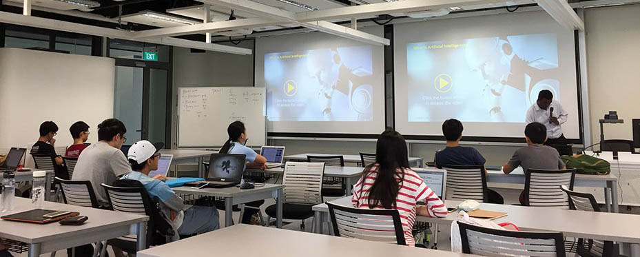

SUTD Main Campus
SUTD Virtual Campus Tour
Locations
Building 1
Building 1
Cohort Classrooms
SUTD's cohort classrooms are reconfigurable spaces for various activities. Freshmore students have round-the-clock access to their own cohort classrooms to be used for lessons and student-initiated activities. Whiteboards lining the walls of the classroom encourage collaboration among students and lecturers, enhancing the learning experience.
SUTD Library
The SUTD Library has a unique design and offers a truly sensory experience from discovery through serendipity to a touch and feel with spaces to read, research and reflect.

The following virtual tour takes you through Building 1, from
the front yard near Upper Changi MRT to the link bridge between
Buildings 1 and 2.
Building 2
Building 2
Labs
Unleash your creativity and reveal new possibilities with laboratories such as the Photo and Video Lab, Data Analytics Lab and the Innovative Digital Arts Lab (iDiA Lab).
Campus Center
Located in between Buildings 1, 2 and 3, the Campus Center is the epicentre of activities in SUTD. For a full list of our academic facilities, check out: https://sutd.edu.sg/Education/Academic-Facilities
FabLab
Fabrication Lab
The SUTD Fabrication Lab (Fab Lab) is designed to allow students to quickly bring forth their designs into reality, with rapid prototyping machines such as laser cutters, 3D printers and other machines available for all students to use. The friendly staff are also available during office hours to offer their knowledge and expertise, giving advice on materials selection and fabrication techniques. The Fab Lab supports SUTD’s strong interdisciplinary design focused pedagogy, with emphasis on both theory and practical work. In house fabrication of parts allows rapid turnaround for projects, enabling students to iterate and refine their prototypes with less hassle.
24/7 Maker Space
The 24-hour access Maker Space 2 allows students to realise their ideas the moment it occurs to them, any time of the day or week. The space is equipped with drill presses, bend-saws, sanding machines, and other tools for working on basic materials. From academic projects to personal interests, Maker Space 2 serves as a convenient space for students to materialise their ideas.
Computational Fabrication
Students have basic access to 3D printers and laser cutters, which are used for both academic and personal projects. This allows our students to explore their design concepts easily, as well as assisting in communicating ideas to clients, colleagues and collaborators.
Specialised Facilities
There are other specialised facilities in the Fab Lab, including an Electronics Lab, a Wood Working Section, and a Metal Working Section, equipped with machines for advanced users. Students who wish to use such machines will need to go through training and certification before being allowed to make bookings.
More Locations
Go on our other virtual tours
Learn more about SUTD
Other Student Initiatives
For other student intiatives, visit our OpenSUTD landing page.